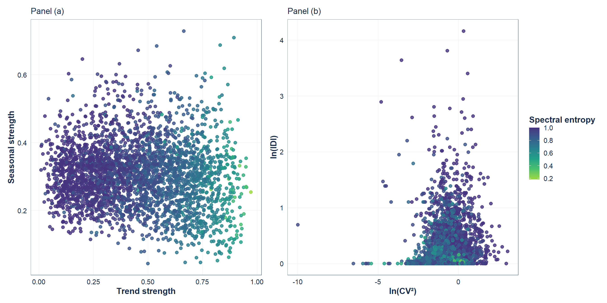
Evaluating and Benchmarking Time Series Foundational Models


Image credits: AI-generated visuals created with OpenAI. No real patient or facility images are used.
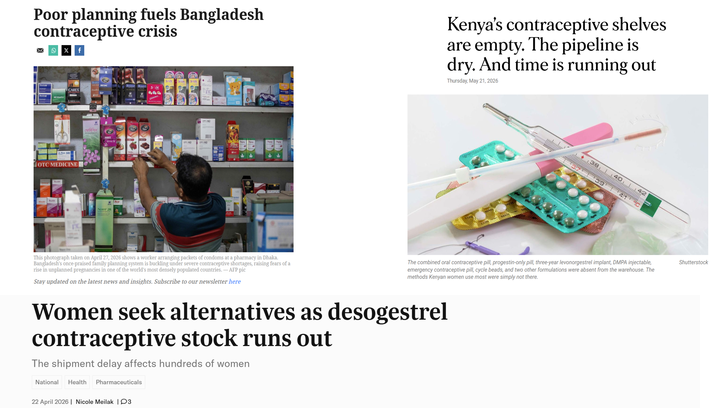
Sources: MalayMail; NationAfrica; TimesofMalta
Outline
Motivation: why this problem matters
The planning reality
Why TSFMs look attractive
Forecast quality beyond accuracy
Experimental design and results
Where this work goes next
121 million unintended pregnancies occur each year worldwide.
Over 60% of unintended pregnancies end in abortion,
and over 45% of abortions are unsafe.
Sources: United Nations Department of Economic and Social Affairs 2020; Sully et al. 2020; Bearak et al. 2020.

What the planning reality looks like
“Forecasting tools exist, but the last-mile planning reality is still Excel, paper forms, manual adjustments, and fragmented systems.”
Ethiopia field visit and collaborator feedback
“A tool can be ‘in use’, but only in a limited scope, during a project period, or in central sites, without scaling to the whole country.”
DHIS2/HISP collaborator feedback
Why time series foundation models look attractive
- Public health systems have many related but weak individual time series.
- TSFMs may transfer learned temporal patterns from large-scale pretraining.
- They can reduce the need for long local histories, manual feature engineering, and repeated local model building.
- This creates the potential to democratise forecasting support for facilities where planning is often done by nurses, store managers, or non-specialist staff.
But accuracy is (not) all we need

Sources: Accuracy is (not) all we need presentation by Stephan Kolassa (2025)
But accuracy is (not) all we need
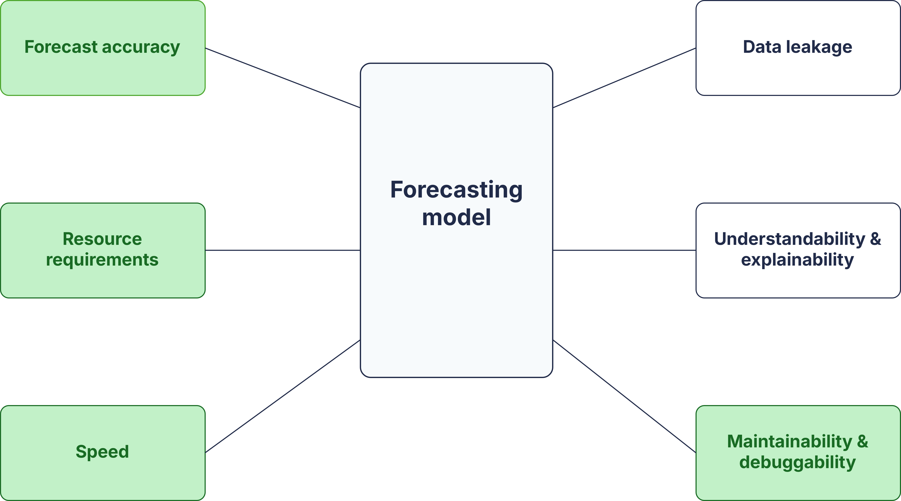
Sources: Accuracy is (not) all we need presentation by Stephan Kolassa (2025)
Do time series foundation models provide better forecast quality than statistical baselines in public health supply chains?
Experimental design

Experimental design
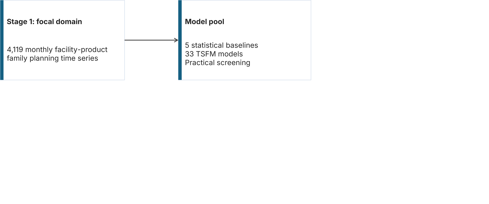
Experimental design

Experimental design

Experimental design
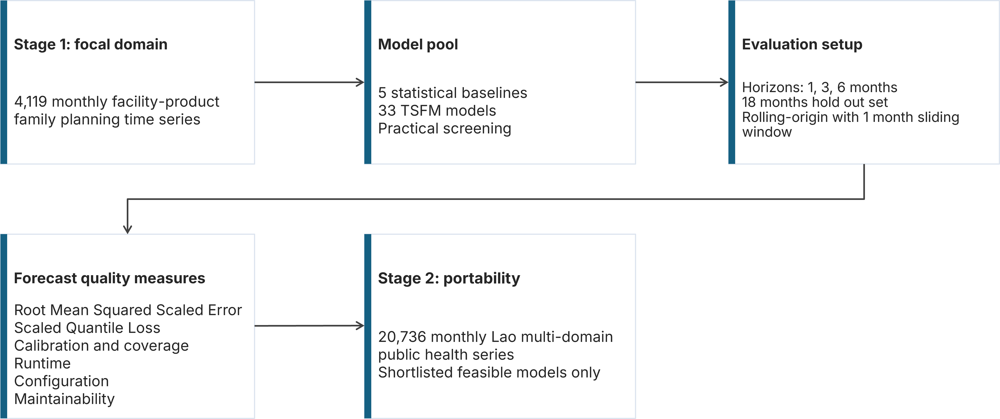
Experimental design

Note: Experiments were run locally on an Intel Core Ultra 9 185H processor with 32 GB RAM between Jan–Mar 2026. Runtime bottlenecks and execution failures should be interpreted in this testing context.
Results shown: family planning data, 3-month forecast horizon.
A quick look at the data
TSFMs can improve point accuracy
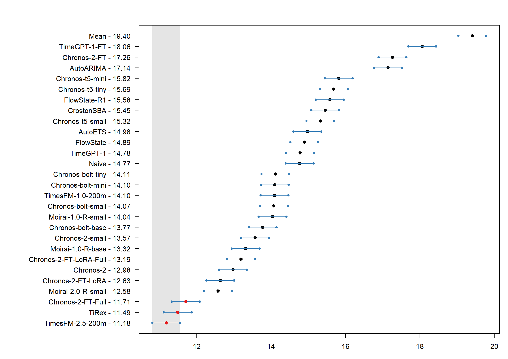
Probabilistic performance tells a similar story
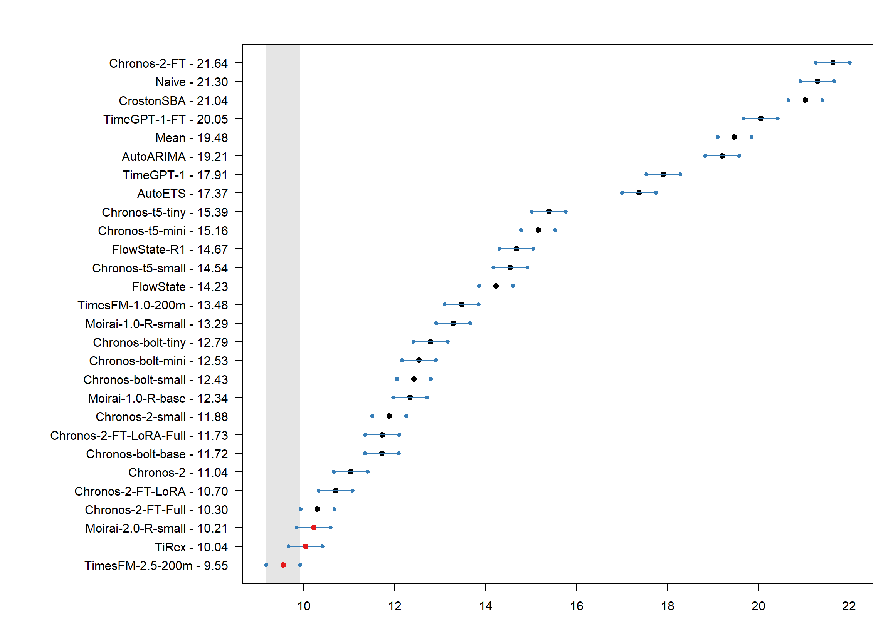
Aggregate loss can hide miscalibration
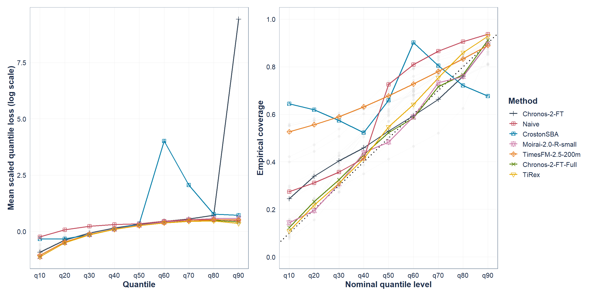
Aggregate loss can hide miscalibration

Aggregate loss can hide miscalibration
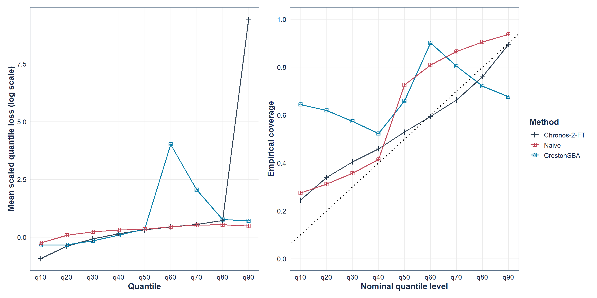
Useful gains are available within minutes
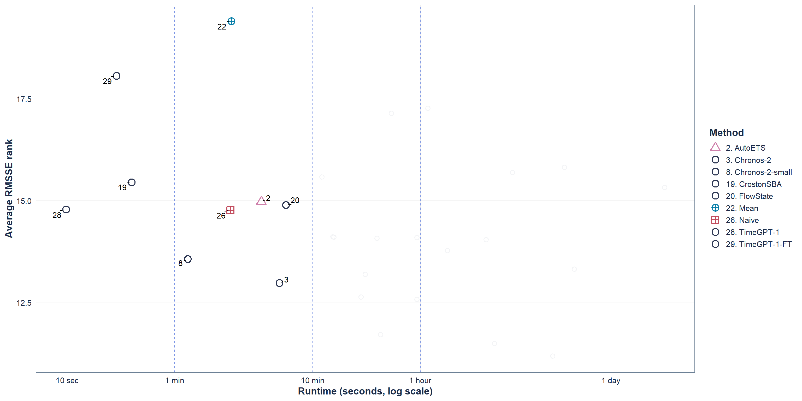
The operational shortlist expands within one hour
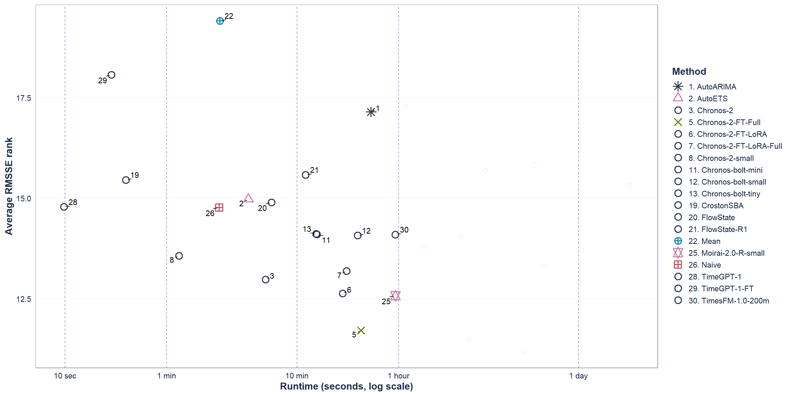
Accuracy gains come with computational costs
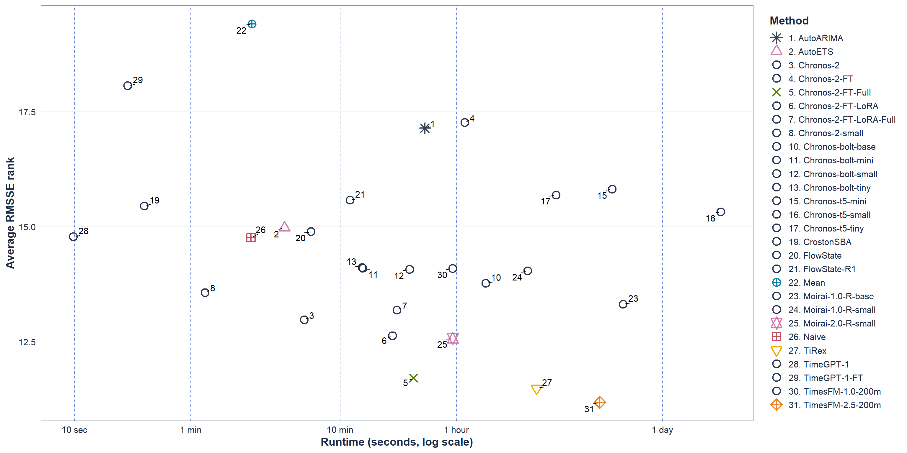

Maintainability and debuggability
- High runtime
Too slow for large rolling evaluations.
e.g.; Chronos-t5-large, TimesFM-2-500m
- Unstable outputs
Negative or extreme forecast values.
e.g.; Chronos-2-synthetic
- Configuration failure
Model paths, dependencies, API issues.
e.g.; LagLlama, Chronos-2-LoRA
- Fine-tuning risk
Local fine tune can worsen performance.
e.g.; TimeGPT, Chronos-2

The operational question is not “TSFM or baseline?”
it is;
Which model gives enough forecast quality to justify its complexity?
- Accuracy show whether it improves forecasts.
- Calibration shows whether uncertainty can be trusted.
- Runtime shows whether it can scale.
- Maintainability and debuggability show whether it can survive deployment.

Where this work goes next
- From forecast accuracy to decision value
Evaluate whether better forecasts improve ordering, allocation, stock availability, and budget use.
- From benchmark results to model-selection guidance
Develop a practical framework for deciding when simple baselines are enough, when TSFMs are justified.
- From cloud inference to data governance
Account for country-level data residency, privacy, and infrastructure constraints.
- From offline evaluation to embedded systems
Test how these methods work inside LMIS, DHIS2, CHAP, or other routine planning workflows.

Experimental design
Country-level model ranking: RMSSE
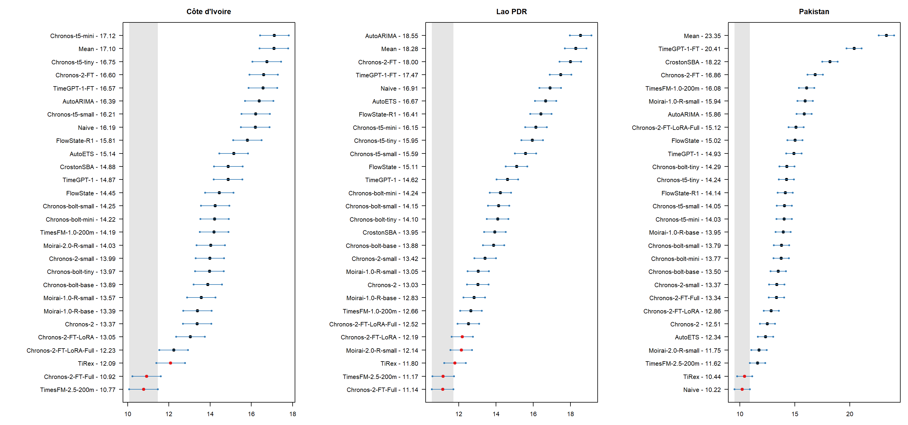
Country-level model ranking: sPIN
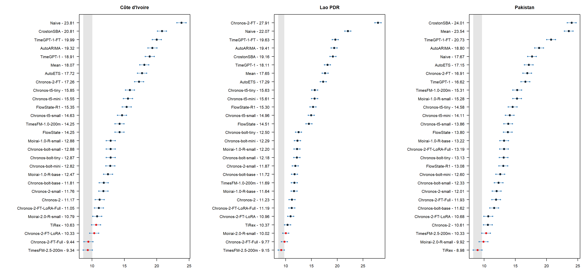
Accuracy gains come with computational costs
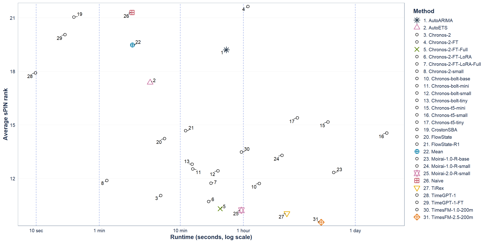
Experimental design